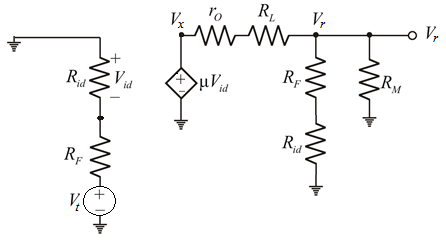

Define gain .
.
From Figure 1, the voltage is,
Write the expression voltage using voltage division rule.
Substitute for in the equation.
From the gain definition, substitute  for .
for .
Thus gain of the amplifier  is .
is .
Refer to the circuit diagram of feedback current amplifier in Figure P10.26 in the textbook.
Draw the equivalent circuit for Figure P10.26.

Figure 1
Define gain.
From Figure 1, the voltage is,
Write the expression voltage using voltage division rule.
Substitute for in the equation.
From the gain definition, substitute for .
Thus gain of the amplifier is .
Define feedback factor .
.
Write the expression for using voltage division rule.

From the feedback factor definition, substitute  for .
for .
Thus feedback factor  is .
is .
Find the loop gain of the amplifier.
For operational amplifier input resistance is very high. .
Thus, loop gain of the amplifier  is.
is.